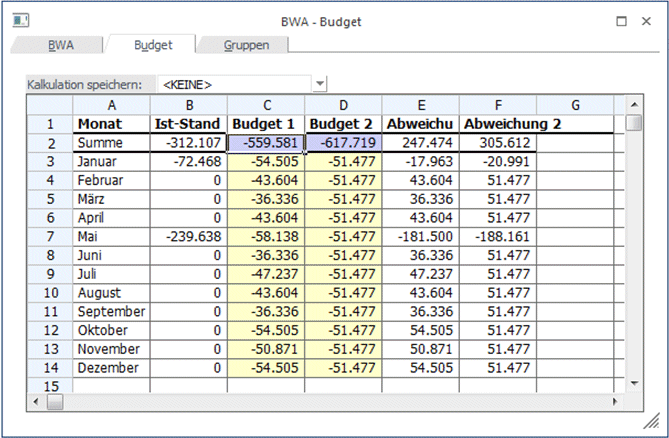

Durch Anwahl des Registers BUDGET öffnet sich die Budget-Eingabe. Die Spalte IST-Werte ist automatisch mit den aktuellen Werten gefüllt.

In den Spalten Budget 1 und Budget 2 können Sie zwei Budgetansätze hinterlegen, wobei die Eingabe der Budgetwerte global für das gesamte Jahr erfolgen kann. Dabei würde der Jahreswert automatisch auf die einzelnen Monate umgelegt werden. Nicht durch 12 teilbare Werte werden auf die Monate aufgeteilt (siehe Budget 2 der Abb.). Es kann auch jeder Monatswert manuell eingegeben werden kann.
Werte mit Nachkommastellen werden sofort bei Eingabe auf ganze Zahlen gerundet.
In den nachfolgenden Spalten Abweichung 1 und Abweichung 2 wird die automatisch vom Programm berechnete Abweichung zwischen den IST-Werten und den Budgetansätzen ausgewiesen.
Grundsätzlich ist die Tabelle frei definierbar, d.h. es können selbsttätig Änderungen an der Berechnung der einzelnen Werte (ausgenommen der IST-Werte) vorgenommen werden. Es können auch neue Berechnungen hinzugefügt werden. Dazu gibt es die Möglichkeit, Kalkulationsschemata zu speichern.
Ø Kalkulation speichern:
Der Eintrag <KEINE> kann überschrieben werden. Wird der neue Eintrag durch Drücken der Return-Taste bestätigt, dann wird die Meldung
angezeigt. Wird diese mit JA bestätigt, wird ein neues Kalkulationsschema mit dem eingetragenen Namen gespeichert. Wird die Meldung mit NEIN bestätigt, gelangt man wieder in die Auswahllistbox zurück.
Achtung
Das so hinterlegte Kalkulationsschema wird erst dann gespeichert, wenn auch die BWA, die gerade bearbeitet wird, gespeichert wird.
Für BWAs können beliebig viele verschiedene Kalkulationsschemata angelegt werden.
Verarbeitungshinweise
Die Tabelle mit dem Kalkulationsschema funktioniert im Wesentlichen gleich, wie eine Excel-Tabelle. Nachfolgend werden einige Befehle aufgelistet, die in der Tabelle Anwendung finden können:
Ø =SUM
Mit dem SUM-Befehl können beliebige Bereiche einer Tabelle addiert werden.
Beispiel 1
Ø =SUM(A1+A2)
Addiert die Felder A1 und A2
Ø =SUM(A1..A5)
Addiert die Felder A1 bis A5
Ø =
Mit dem Istgleich-Zeichen wird symbolisiert, dass eine Rechenoperation folgt. Dabei können alle Grundrechnungsarten (+ - * /) verwendet werden. Dabei kann sowohl mit Spalten als auch mit fixen Werten gerechnet werden.
Beispiel 2
Ø =(A1 / A2)
Der Wert von A1 wird durch den Wert von A2 dividiert.
Ø =(A3 * 5)
Der Wert A3 wird mit 5 multipliziert.